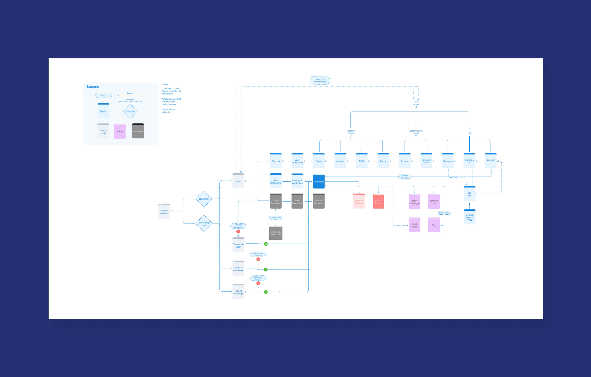
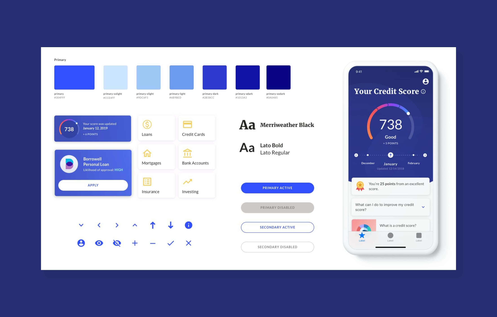
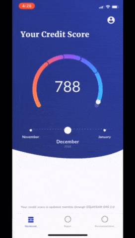
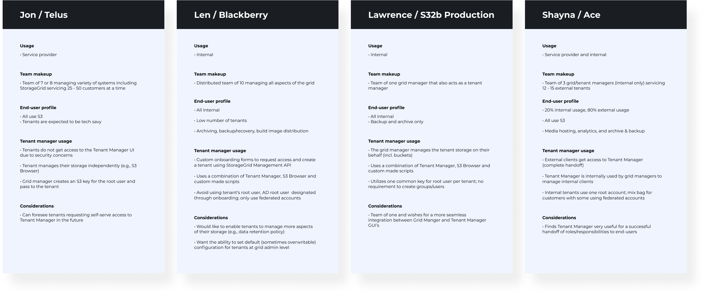
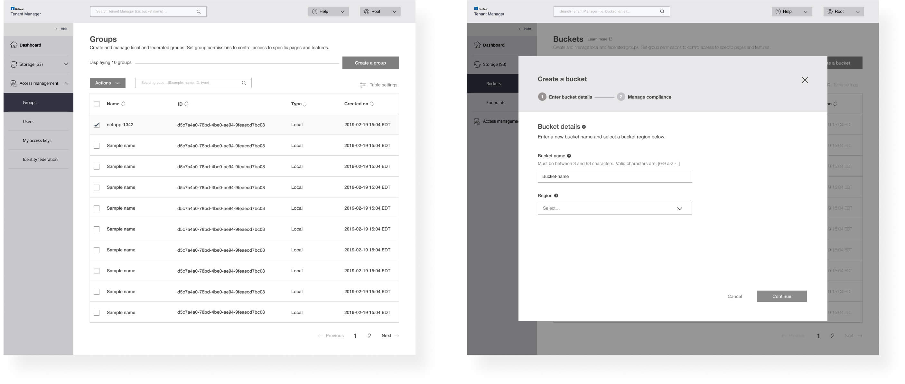
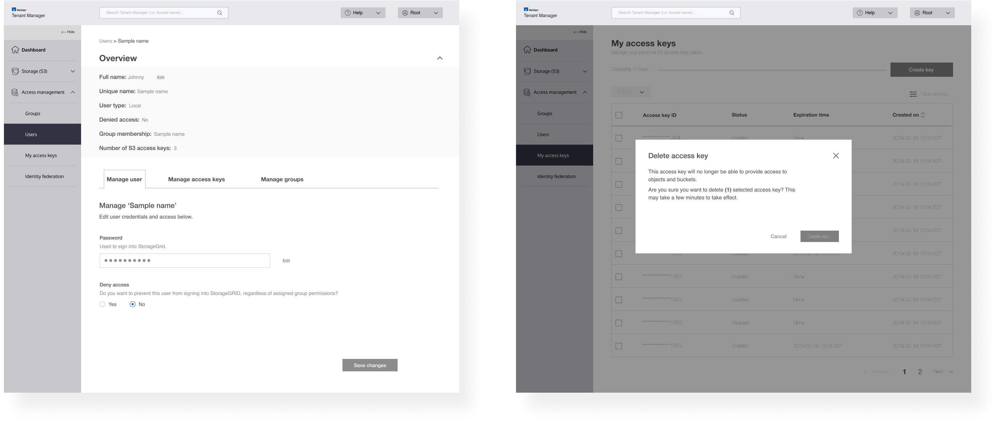
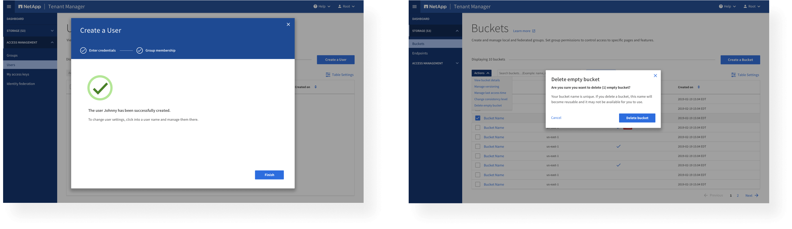
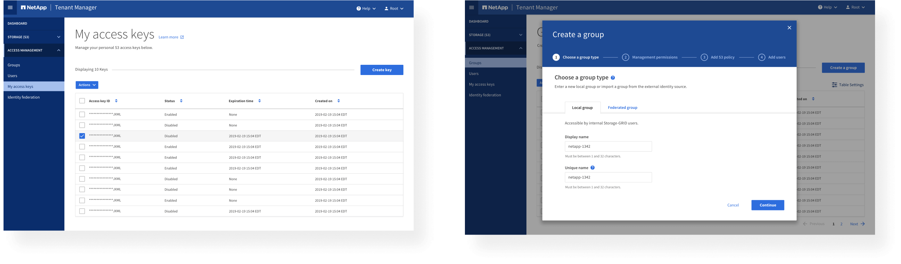
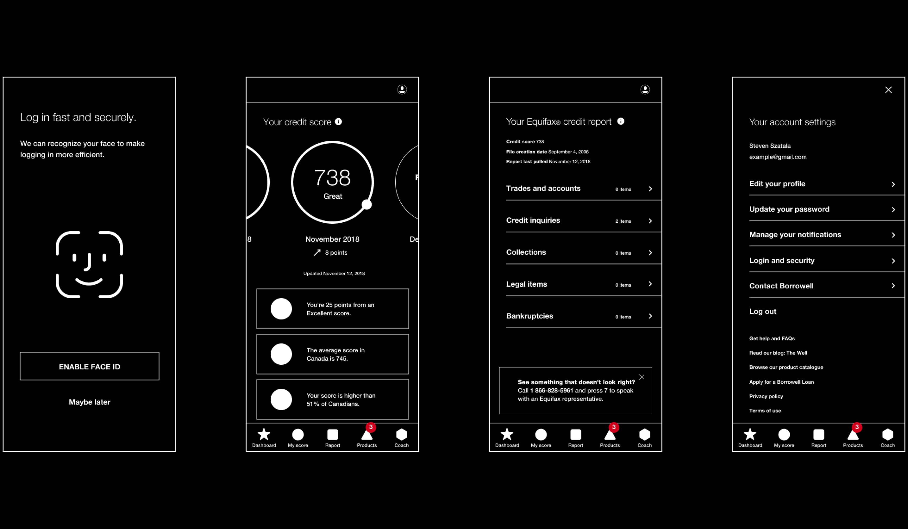

Steven Szatala
Product Designer
ABOUT
I'm Stevie, Steve, Steven...
A Hawaiian shirt lovin', Mountain bike ridin', Designer. I am passionate about creating human positive experiences through inclusivity and collaboration. I am determined to transform how people consume and comprehend new technologies for the better.
Innovative, Communicative, and Collaborative
With an educational background in Psychology, Interaction Design, and Development I was able to constantly expand my research and design skills while learning about and implementing new technologies. I worked closely on a multitude of projects with other designers and developers from the initial ideation phase to the final prototyping and development phases. This allowed me to implement and understand design from different perspectives and become better equipped to create impactful experiences.
User Experience Design
A user-centered mindset incorporating and understanding the principles that influence effective human-computer interaction.
My design process is constantly evolving and I am eager to continue learning and exploring new ways that will enhance my abilities when developing unique experiences.
Design Framework
1. Strategy and Scope
2. Research and Analysis
3. Brainstorming and Ideation
4. Conceptualize
5. Create
- Personas
- Surveying
- Information Architecture
- User flow and Journey Maps
- Site Maps
- Storyboarding
- Sketches
- Wireframes
- Prototyping
- Usability Testing
- Mockups
6. Iterate
Plan, Design, Develop, Test, Feedback, Iterate
As a growing designer, it is imperative to have a clear understanding of the Agile process. I have worked collaboratively in multiple design sprints and have been a part of a 3-year research project that has incorporated the continuous cycle of improvement.
WORK
×


Borrowell provides its members with free access to both their credit score and credit report.
At the time, the Borrowell website had been the main source of traffic for members gaining access and monitoring their credit profiles. Analytics tell us that users often log into the website in anticipation of a refreshed credit score alongside tailored product recommendations.
In response... Borrowell wanted to support the immediacy of information sought after by their customers. The Rangle team designed and built a best-in-class mobile app that offers push notifications for updates to both credit score and product recommendations, with robust security features, including biometric login, comparable to major banking apps.
Why a mobile app?
- To effectively compete with competitors (Credit Karma, Mogo)
- Member access to credit report anytime, anywhere
- Ability to compare product recommendations for credit cards, loans and more
The core team
- 1 UX lead
- 1 UX Designer/Researcher (my role)
- 1 Visual Designer
- 1 Solutions Architect
- 2 Developers
- 1 Dev Ops
- 1 Scrum Master
- 1 Program Director
The team was requested onsite at Borrowell's office for the majority of the project.
My role and responsibilities
Experience Design
- Producing flows, wireframes, prototypes
- Collaborating with Product, VD, and Tech
- Copywriting and strategy
- Documenting rules and accessibility considerations
UX Research
- Competitive analysis
- Recruiting participants for testing
- Conducting usability test sessions
- Synthesizing and sharing feedback
- Implementing actionable feedback
The team's lean Discovery model in action
Constructed by Harjot Bal, Lead Experience Designer
Become one with credit
We collaborated with Borrowell’s stakeholders to understand how their AI platform makes recommendations to members. In order to successfully design a holistic experience, we had to familiarize ourselves with the following subject matter:
- Credit score factors and impact
- Equifax security requirements
- Product approval likelihood algorithms
- Improving credit and financial literacy
- Targeted marketing and API integration
Create a hub for documentation
The team created a source containing all documentation (within the client's Atlassian Suite - Confluence and Jira) that showcased our process, rules regarding the experience, and guidelines to consider. This allowed us to create actionable tasks for both design and development and enabled us to reference important feature discussions.
Noteworthy documentation pages:
- Discovery
- Keyboard behaviour and guidelines
- Best practices and considerations
- In-app copy and content
- Usability testing structure, findings and synthesis
Competitive analysis
The team immersed themselves in the space of Borrowell’s competitors. We synthesized our findings into “what’s working” and “what’s not working” across best-in-class experiences, both in and out of the finance industry.
We focused on the following areas:
- User experience
- Visual design
- Webviews
- Content strategy
Map out the flows
We worked closely to map out a series of flows representing scalable solutions that easily integrate into the current web experience. The goal was to create a simplified and transparent experience for Borrowell's members, consisting of:
- Sign up and log in
- Onboarding and biometrics setup for secure login
- Retrieval of credit score and credit report
- Exploration of product recommendations
- Predictive content and content adaptations based on user's credit score and activity in the application
- Push notifications for updates to both credit score and product recommendations

Create a design framework
We worked with Borrowell to help define their design rebrand and evolve their look and feel. The team collaboratively managed to create a design language that could be incorporated into the current web experience while staying true to the band and familiar with Borrowell's members.

The Google card paradigm
We knew we had to educate users on financial literacy and display a lengthy credit report meaning that the app would be pretty content heavy and would require a solution that was scalable and easy to use.
The team worked together through a card sorting exercise to categorize different types of content examples, the frequency in which they would appear on the app, and their priority (order).
We decided that the best way to visualize this information would be using a card component. This is mainly because they can carry several behaviours (dropdown, links, dialogs) while looking consistent. By doing so, We created 3 types of cards: Task cards, Fact cards, and Blog post cards.
Good ol' wireframes
After long ideation sessions and multiple flows created, we were simultaneously creating wireframes. The goal was to test out different designs quickly in order to pivot and edit the WIP as necessary based on actionable feedback.
Test regularly and implement feedback
We made sure that multiple rounds of usability testing were implemented in our process for both Lo-fi and Hi-fi work. Regular usability testing sessions were planned and conducted with Borrowell users as well as internal stakeholders.
Our research activities included:
- Creating multiple InVision prototypes
- Recruiting participants
- Drafting test plans
- Conducting usability test sessions
- Synthesizing actionable feedback
- Implementing feedback into delivery cycles
Our usability tests were usually with 5 participants per round and were split into 2 phases.
Phase 1: Wireframe based prototypes
Evaluate flows and functionality, layout of content, and utility (core needs). At the end of each session we had cut out product cards and asked users to sort them based on what content is most important to them. We captured the product card results in the image seen below.
Key nuggets from usability sessions:
- Reinforce confirmation screens for clarity
- During onboarding, align progress bar with actual number of steps
- Provide more tooltips for complex terminology (within credit report)
- Revisit naming of text links
Phase 2: Wireframe and Design based prototypes
Evaluate overall UX and UI, positioned as close-to-final product.
Key nuggets from usability sessions:
- Simple, clean, and intuitive
- Users would like to see more tooltips about why certain demographic questions are necessary (ex. What is your income?)
- Appreciated educational aspects of credit score and credit report
Make it accessible
The design team worked effortlessly with the development team to convert designs into reusable components with embedded accessibility properties.
This included:
- Recommended WCAG standards for colour contrast
- Target sizes for hotspots
- Alt text and ARIA labels
- Global navigation
*gasp* It's alive!
The first time we saw the credit score meter function was a very exciting moment for the team. C'mon, Who doesn't love animations?!

Make it fashion: final app experience
One key takeaway from this project I found to be very rewarding was that testing at multiple stages of the experience can uncover paint points that you or your team were unable to diagnose. Even if you don't test with real users, conducting quick sessions internally with participants who have no visibility to the application will give you quick actionable feedback and allow you to validly pivot the work in progress.
When it came to designing the Borrowell experience for both iOS and Android devices, we not only learned more about financial literacy but we were able to create a meaningful and trustworthy experience for users who are new to or experienced with the topic of credit.
Key features included:
- Biometric login (fingerprint and Face ID)
- Push notifications
- Custom webview for external links
- Google card paradigm
The Impact
The team was able to create a mobile app that satisfied their users and can compete in the mobile financial space.
Today the app...
- Launched with a 5/5 star rating and is currently being maintained by the Borrowell team with a stellar 4.8/5 star rating in both the App Store and Google Play Store
- Is ranked #30 in the App store under Finance
- Named one of the top five "Breakout finance apps" in Canada in 2019 and was featured in various news articles
Close project
×

On track and


What is NetApp - Tenant Manager?
Leading organizations count on NetApp for software, systems and services to store, manage, protect, and retain one of their most precious assets: their data. My focus for this project was specifically on the NetApp StorageGRID: Tenant Manager.
The Tenant Manager allows you to manage all aspects of your tenant account. You can use the Tenant Manager to monitor your storage usage and manage user accounts through a process called identity federation or by creating local groups and users to assign them specific permissions for that account (for example, a group named Admins would be given the control of administrators for the account). For S3 tenant accounts, you can also manage S3 keys, manage S3 buckets, and configure platform services but we won’t go too deep into that because it can become quite overwhelming.
The Challenge
Redesigning the Experience
The original experience was outdated, content heavy, and inefficient to users. Our goals for the project were to: understand the needed capabilities of Tenant Manager, enhance the current experience, leverage NetApp’s newly built LUCI design system, create documentation (flows, accessbility requirements), work with developers to build out a POC and do our best to educate the client about the necessity of UX and Visual Design.
The core team
- 1 Lead Experience Designer and Researcher (my role)
- 1 Visual Designer
- 1 Project Manager
- 2 Developers (started after design was finished)
- Client side consisted of 2 Engineers, Product Owner, and Product Manager
My role and responsibilities
Experience Design
- Use existing Design System to influence decisions
- Producing flows, wireframes, prototypes
- Collaborating with Product, VD, and Tech
- Documenting rules and accessibility considerations
- Conducting heuristic evaluation and audit
- Copywriting
- Educating client on the importance of UX/VD
UX Research
- Competitive analysis
- Conducting stakeholder interviews
- Conducting usability test sessions
- Synthesizing findings
- Implementing actionable feedback
The Discovery
Early insights from users
The discovery phase was a quick, high‐intensity effort that allowed us to define project milestones, audit the existing work, review the competitor landscape, and begin research into user needs, behaviours and pain‐points.
We conducted adaptive user interviews with 5 participants to understand why and how Tenant Manager is used in order to improve it. The interview flow and questions were adjusted according to the users’ context.
We formed questions covering:
- User profile and team makeup
- Perceived value of Tenant Manager
- Current pain points
Value - Top 3 findings
- Tenant Manager is highly valued as an end-user enabler
- Tenant Manager is under utilized; this can be attributed to missing features (need for 3rd party tools)
- General consensus was that the Tenant Manager is easy to use; however, it needs additional features, a modernized look & feel, and more efficient and interactive experience
Usability - Top 3 findings
- Mental effort required to complete tasks is higher than ideal
- Organization of table list items can be improved
- Tooltip consistency and extent of copy throughout the UI can be improved
For consideration
The end-users’ primary role is grid manager (another branch of NetApp’s product, but connected to Tenant Manager). They occasionally manage a tenant’s account on behalf of a tenant.
We gathered useful insights into the users’ team makeup, roles and responsibilities, workflows, current and future use cases, and secondary contextual information about tenants and their use-cases. However, we did not get the usability insights as the users are not primarily using Tenant Manager and we did not have access to primary users of Tenant Manager.
To complement this study, a heuristic evaluation was done (which will be reviewed later in this case study) to reveal gaps in the current state of the UI that can be improved upon future iterations.
Forming perceptions
How would you describe the Tenant Manager?
Team profiles and workflow
After stakeholder interviewers were completed, we created four different team profiles to understand how Tenant Manager is being used and to guide design decisions, priorities, and create empathy amongst the client and our team throughout the project.

Creating the scenarios
We worked with the client and gathered our feedback from users to map out different scenarios and identify the current usage of the selected scenario, any pains involved to reach the final result, and any wants the users would like to see built into the Tenant Manager.
The images below represent the different focus areas in Tenant Manager and each coloured sticky note represents a different user. We used Miro to document the results:
The Approach
Into the trenches
My first step was to perform a heuristic evaluation of the entire UI to reveal usability issues. I decided to do this because I did not have access to primary users of Tenant Manager and needed to perform a method of gathering usability feedback at a lower cost for the client.
Heuristic evaluations are performed by a UX researcher to determine a system’s overall usability. It is based on a set of proven and tested guidelines (heuristics) indicative of user interface effectiveness. It eliminates UX researcher bias and can provide detailed and concrete findings that could be implemented in a future design.
The heuristic model being referenced is Bastien & Scapin Ergonomic Criteria for the Evaluation of Human-Computer Interfaces (which was referred to me by a colleague who had successfully completed a evaluation not too long ago) alongside the Neilsen Norman Group 10 usability heuristics.
What we investigated
Some key nuggets from the evaluation...
Identifying which heuristics revealed the most issues
My findings revealed that there was a pretty even spread between efficiency, workload, consistency, and guidance as the main contributors affecting the experience.
I found that the UI lacked the ability for efficiency, meaning that accelerators are not as available to speed up the interaction for the expert user such that the system can cater to both inexperienced and experienced users.
It was also determined that user tasks were overwhelming and exhausting which can contribute to cognitive load for users. The UI also lacked clear and sufficient guidance to help users from creating and recovering from errors (tooltip, helper text, form field requirements).
The Framework
Aligning ourselves with the Design System
In order to define the overall structure of the experience we needed to understand the LUCI Design System as a whole. We were in constant communication with the makers of this Design System to provide us with a foundation in order to design and build a cohesive NetApp digital product and to understand design decisions that were made.
On track and NSYNC in sync
After understanding different use cases for Tenant Manager and aligning with the LUCI team, we felt we were in the right place to start mapping out the the new structure. I began to think about particular usage contexts, the opportunities they present and how elements in the interface would help to support the user. We held multiple whiteboarding sessions to help us communicate complex flows and visualize the experience. This ultimately led to a finalized flow and was quickly approved by the client.
Creating the experience
Due to the scale of this product we had to move quickly and efficiently. I began to build out wireframes while staying in communication with the client to make iterations seamless and leave no surprises. At the same time, I was protyping screens into InVision and testing screens internally to gauge usability and put my mind to ease that I was on the right track. Quick and dirty usability tests are better than no testing at all.


The Execution
Bringing the experience to life
I was in constant collaboration with the Visual Designer on my team so they had full context and were able to start building a foundation while I was creating wireframes. We saved time working together and were able to build out screens simultaneously. In the end we to built something as a team that we are really proud of.


The Handoff
Equipping the team to effectively build out a POC
The final piece of work that had to be done was to create a package for the developers to start building out a working POC. I created annotations for screens and different flows with considerations for accessibility, interaction design, and visual design specs to set the team up for success.
The Impact
Creating a new process
Since the POC build, stakeholders have responded well to the new features and the simplistic redesign. The team effectively worked together to evolve their design process and communicate the importance of building products with a UX mindset; so much so the client has brought on a internal Experience Designer to maintain the product.
Reflections
What I learned
There’s always time for testing. Due to time constraints, we agreed to do quick tests internally with Developers and DevOps because after all, your customers won’t forgive you.
Collaboration from the very beginning was essential. During the beginning phase of the project, both VD and UX worked closely together. After explaining our process to the client and demonstrating what we could do in a week together in comparison to their waterfall method, it not only built trust between my team and our client but also expedited our process.
Close project
×

Project overview
An increase in using short-term psychotherapies combined with opportunities driven by technological advancements has led to the popularity of smartphone applications designed for mental health support especially among youth. This community-based project is a collaboration between my team, youth in the Region of Peel, the Centre for Addiction and Mental Health (CAMH), the Peel Service Collaborative (PSC) and CoDesign. It involves the creation of a digital platform that draws from existing community services and aids youth in anticipating and dealing with crisis (a state in which a person is unable to cope). This three-year initiative has resulted in Mellow, a mobile application for youth.
This project has allowed me to collaborate closely with real users (youth) and developers, I was able to design, and create wireframes, journey maps, app flows, InVision prototypes, and concept videos as well as conduct interviews, in-person surveying, and usability testing.
In April 2018, my team and I placed as finalists in the CHI 2018 competition in Montreal and were able to present and showcase the work we have developed using a collaborative design approach.
The Challenge
A mobile app to assist youth who are experiencing some form of crisis
Today...
- Youth who experience crisis often do not receive appropriate support and end up in emergency services
- 10.1% (2.8 million) of Canadians aged 15 or older, reported symptoms consistent with at least one of six mental health disorders
- Youth may hesitate to engage and receive traditional mental health and crisis support because of cultural barriers, availability of resources, ease of access, stigma and/or socioeconomic barriers
Featured at...
2019 Digifest (Toronto) / 2019 Mental Health and Technology Symposium / Applied Arts Magazine Student Awards 2018 / 2018 CICan Student Innovative Showcase(Ottawa) / 2018 CHI Student Design Competition (Montreal) / ACM CHI Conference on Human Factors in Computing Systems / ResearchGate 100+ views & 3+ citations / www.crisisplanning.ca
My role
Experience Designer and Researcher
The Approach
Defining our users
We worked collaboratively with marginalized youth located in the Region of Peel - which is the most culturally and ethnically diverse region in the Greater Toronto Area.
Defining our method
We worked with stakeholders throughout the lifetime of the project to collaboratively integrate feedback and create a holistic solution.
- 10 community leaders
- 10 service providers
- 10 friends and family members
- 40 youth from the Region of Peel
The Framework
3 years in the making
The Discovery - Key findings from user interviews and background research
Giving the youth what they want
We conducted user interviews with youth to understand their needs and frame their perspectives. The team noticed a trend that youth expect the application to embrace 3 key areas:
Trust and Privacy
The Youth stressed to us that keeping their information secure and private was something that would enable them to use the application.
Culturally Inclusive Design
Youth experience crisis differently and it can be an isolating experience when cultural and language barriers are presented to them.
Crisis Planning and Management
Youth needs an alternative to the traditional paper based approach to crisis planning and saw value in a digital solution.
The current paper-based approach
The Design Brief
Our mission and requirements
The Approach
Designing a holistic experience
We began our approach by creating user flows, interviewing and testing with users.
The user flow
Usbility testing and user interviews
We designed rapidly and created hi fidelity wireframes based off of sketches from whiteboarding sessions and design charrettes. Doing so allowed us to iterate and test more often.
We conducted a series of usability tests at different stages of the project to ensure that the final design is aligned with user requirements. This allowed us to empathize with users throughout the span of the project.
We tested with 12 youth, 6 counsellors and 4 family members and we asked them to perform a walk through of the application and to think aloud on the usability of different features.
This helped the team to understand how a counsellor would use the app with their clients in addition to youth using it on their own.
The feedback led to design recommendations and was later reflected in the final version of the mobile application.
The Visual Design Experience
Introducing Mellow
Reflections
What I learned
Empathy played a big role in creating copy for the application as we had to be cognisant of words that could be triggering towards youth and elicit a negative response. We had to request constant and additional feedback from counsellors in terms of how best to write a crisis plan and copy within the application.
Building trust was a difficult processs. The youth were both hesitant and passionate and wanted to be sure that we were serious about this matter. We worked together to make everyone feel comfortable and encourage participation to make everyone feel welcome and involed.
It was inspiring to see the youth so empowered and voicing their opinions in each phase of the process. I truly value their advocacy for mental health awareness and made me more aware to incorporate these kinds of design decisions into my process.
Close project

Borrowell - Credit score made easy
Mobile app - Finance
NetApp - Simplifying the management of storage accounts in the browser
Web - Hybrid cloud data services and data management
Mellow - Empowering youth experiencing crisis
Mobile app - Health
JetBlue Travel
work in progress
POC - Designing for Machine Learning to enhance the patient experience
Work in progress
CONTACT
Give Me A Shout!
I am currently seeking freelance projects and full-time opportunities. Let me know if you want to work together!
Steven.Szatala@gmail.com Steven Szatala